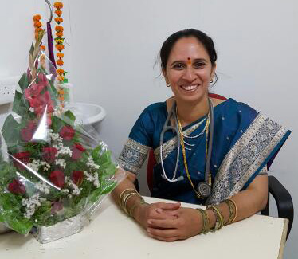

DR. Rachana S Patange is one of the best homeopathy Doctors in Pune, practising since the year 2015. DR. Rachana graduated from Dhondumama Sathe Homeopathy Medical College, Pune. She has completed her PGDEMS course from Ruby Hall Clinic.
DR. Rachana worked in Khopoli Municipal Hospital as a Medical Officer. She worked with DR. Sunil Dongre, one of the leading practitioners in Khopoli.
She is a visiting Homeopathic consultant at DR. Dongre clinic Khopoli and Dyanand clinic, Phulgaon.
Her field of expertise includes Paediatric cases, acute cases, female disorders, geriatric problems, psychiatric and emotional problems.
She has a good hold on Flower Remedies, which is a safe and natural method of healing.
📍 Pune Clinic: A 304 Palazzo Co. Hos Soc., Balewadi, Pune
📍 Khopoli Clinic: Dr. Dongares Clinic R.D. Nagar, Khopoli
📞 Phone: 9011788037